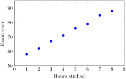

Suppose we record the hours studied and exam scores for eight students:
Section 5.1 Scatterplots and Correlation
When each observation comes as a pair of numbers, we often label the two variables \(x\) and \(y\text{.}\) Usually \(x\) is the independent variable and \(y\) is the dependent variable. That means we use \(x\) to help explain or predict \(y\text{.}\)
A scatterplot places each data pair \((x,y)\) as a point in the plane. Once the points are plotted, we look for an overall pattern.
Example 5.1.1. Study Hours and Exam Scores.
| Hours studied | Exam score |
|---|---|
| 1 | 58 |
| 2 | 62 |
| 3 | 67 |
| 4 | 71 |
| 5 | 76 |
| 6 | 79 |
| 7 | 85 |
| 8 | 88 |

The scatterplot in Figure 5.1.3 shows an upward trend. As study time increases, exam score also tends to increase. That is an example of a positive association.
In general, a scatterplot may suggest one of three broad patterns.
-
No clear correlation: the points do not show a clear upward or downward trend.
A useful visual trick is to mark the point \((\bar{x},\bar{y})\text{,}\) where \(\bar{x}\) is the mean of the \(x\)-values and \(\bar{y}\) is the mean of the \(y\)-values. The vertical line through \(\bar{x}\) and the horizontal line through \(\bar{y}\) form a mean cross.
If most of the points lie in the first and third quadrants relative to that cross, then the variables tend to increase together, which suggests positive correlation. If most of the points lie in the second and fourth quadrants, then one variable tends to increase as the other decreases, which suggests negative correlation. If the points are spread more evenly among all four quadrants, the data may have little or no linear correlation.
![Three small scatterplots side by side. In the first, most points lie in the first and third quadrants relative to the mean cross, showing positive correlation. In the second, most points lie in the second and fourth quadrants, showing negative correlation. In the third, the points are spread around all four quadrants, showing little or no correlation.The figure contains three scatterplots. Each has a vertical dashed line at x-bar and a horizontal dashed line at y-bar, forming a mean cross. In the left panel, labeled Positive correlation, the points cluster from lower left to upper right, mainly in quadrants one and three relative to the mean cross. In the middle panel, labeled Negative correlation, the points cluster from upper left to lower right, mainly in quadrants two and four. In the right panel, labeled Little or no correlation, the points are scattered around all four quadrants with no clear linear direction.](generated/latex-image/fig-mean-cross-cases-2.svg)
The mean cross is a quick visual guide, not a substitute for a full scatterplot or the actual value of \(r\text{.}\) Still, it is a nice way to see why positive correlation puts many points in quadrants one and three, while negative correlation puts many points in quadrants two and four.
The correlation coefficient, written \(r\text{,}\) measures the strength and direction of a linear relationship. Its value always satisfies
\begin{equation*}
-1 \le r \le 1.
\end{equation*}
-
If \(r>0\text{,}\) the linear relationship is positive.
-
If \(r<0\text{,}\) the linear relationship is negative.
-
If \(r\) is close to 0, there is little or no linear relationship.
-
If \(|r|\) is close to 1, the points lie close to a line and the linear relationship is strong.
One common formula for \(r\) is
\begin{equation*}
r=\frac{\sum (x-\bar{x})(y-\bar{y})}{\sqrt{\sum (x-\bar{x})^2}\sqrt{\sum (y-\bar{y})^2}}.
\end{equation*}
In practice, technology usually computes \(r\) for us. What matters most in an introductory course is the interpretation. Correlation tells us about the strength of a linear pattern, not about cause and effect.
Example 5.1.5. Interpreting Correlation.
If a data set has \(r=0.91\text{,}\) then it has a strong positive linear relationship. If another data set has \(r=-0.84\text{,}\) then it has a strong negative linear relationship. If a third data set has \(r=0.08\text{,}\) then it has almost no linear relationship.
Activity 5.1.1. Reading a Scatterplot.
Use the study-hours data set to practice reading a scatterplot and describing the overall pattern in words.
(a)
Make a scatterplot of the study-hours data from Table 5.1.2. If you use software, label the axes clearly.
(b)
Describe the direction of the association and tell whether it looks weak, moderate, or strong.
(c)
Explain whether the plot suggests a positive correlation, a negative correlation, or no clear correlation.
Activity 5.1.2. Interpreting Correlation Coefficients.
Practice translating the value of \(r\) into a plain-language description of the relationship.
(a)
Suppose \(r=0.88\text{.}\) Describe the direction and strength of the linear relationship.
(b)
Suppose \(r=-0.64\text{.}\) Describe the direction and strength of the linear relationship.
(c)
Suppose \(r=0.12\text{.}\) Explain what this says about the linear relationship, if anything.
Activity 5.1.3. Using the Mean Cross.
Use the study-hours and exam-scores data to connect the mean cross with the direction of correlation.
(a)
Find the mean of the hours studied and the mean of the exam scores.
(b)
Plot the point \((\bar{x},\bar{y})\) on the scatterplot and draw the mean cross.
(c)
Count how many data points lie in quadrants one and three relative to the mean cross, then explain why that supports the direction of the correlation.